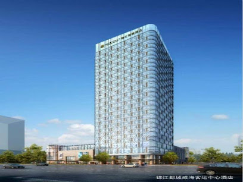
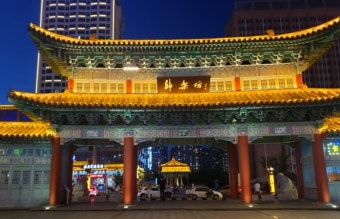
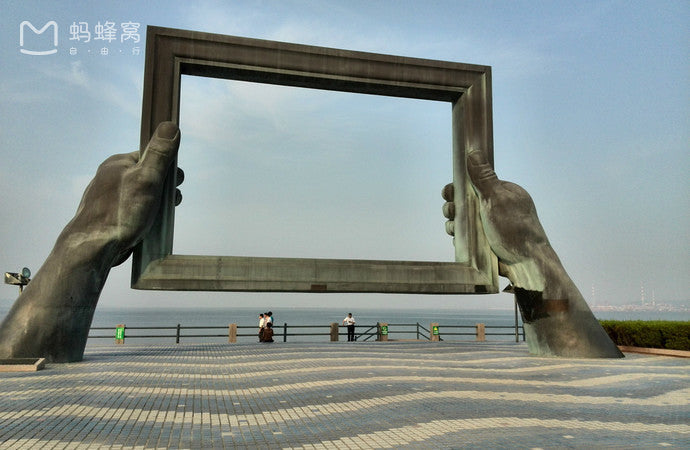
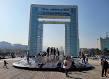

웨이하이(Weihai)
Date : 25/07/18~07/20

안종현
안성택
부현서
안인택
안성택
부현서
안인택
< 여행 전 점검 >
호텔 주소
Metropolo Jinjiang Hotels, No.51, Huaxia Rd, Weihai, Shandong, China 264205
- 고려중인 여행지 목록 -
화샤청(华夏城)
구룡만공원(九龙湾公园)
버스투어
1일차
웨이하이 공항
↓
예상소요시간 40분
40CNY(약 7500원)

호텔(Metropolo Jinjiang Hotels)
↓
도보 이동 10분내외

한러팡(Hanlefang) 야시장
2일차
호텔(Metropolo Jinjiang Hotels)
↓
차량이동 40분
마오토우산(2번 전망대)
↓
차량이동 30분
화거8번가(火炬八街)
↓
차량이동 10분
일몰고성(中央电视台威海影视城)
↓
차량이동 15분
금해만잔교(金海湾栈桥)
↓
차량이동 20분
오우러팡(欧乐坊) 야시장
3일차
호텔(Metropolo Jinjiang Hotels)
↓
예상소요시간 10분

웨이하이 공원(weihai Park)
↓
차량이동 20분

행복문(Xingfu Park)
↓
차량이동 20분
호텔(Metropolo Jinjiang Hotels)
↓
예상소요시간 40분
40CNY(약 7500원)
웨이하이 공항
M
1
2
3